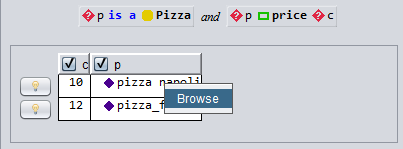
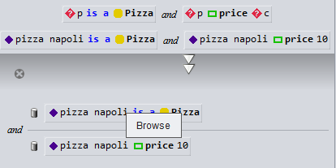
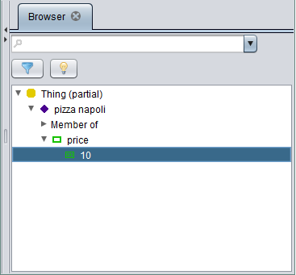

ODASE Release Notes
1Release Notes
11.3.6
- Various Pigwidgeon fix, static individuals generation with lookupBy[keys], lookupById generation
- Pigwidgeon, add warning of unprocessed entities, and add option --exit-on-unprocessed to fail on unprocessed entities
11.3.1
- Allow for concurrent KnowledgeBase creation to speed up multi-KB application startup
- Allow rdfs:label to be serialized in a JSON-LD service for all individuals
- Allow to define modes for custom builtins (which may lead to better performances)
11.3.0
- Add Javascript utility functions for JSON-LD, to help using semantic services directly on the
browser
- Various performance improvements on the Priscus reasoner
- Enable log4j2 logs for rules rewriting, useful to understand and influence the rules evaluation
order
- Fix Workbench layout issues
- Fix rdfsql comparison bugs
- Add contextual browse in Workbench which allows to open a browser on any individual encountered in
an query result or explanation. By right clicking on any individual, a context popup menu proposes
to browse the individual like this:

or like this:

which leads to

- Workbench can now be started with a browser open to a set of individuals in the context of a
concept. This feature can save a lot of time during application testing and explanation.